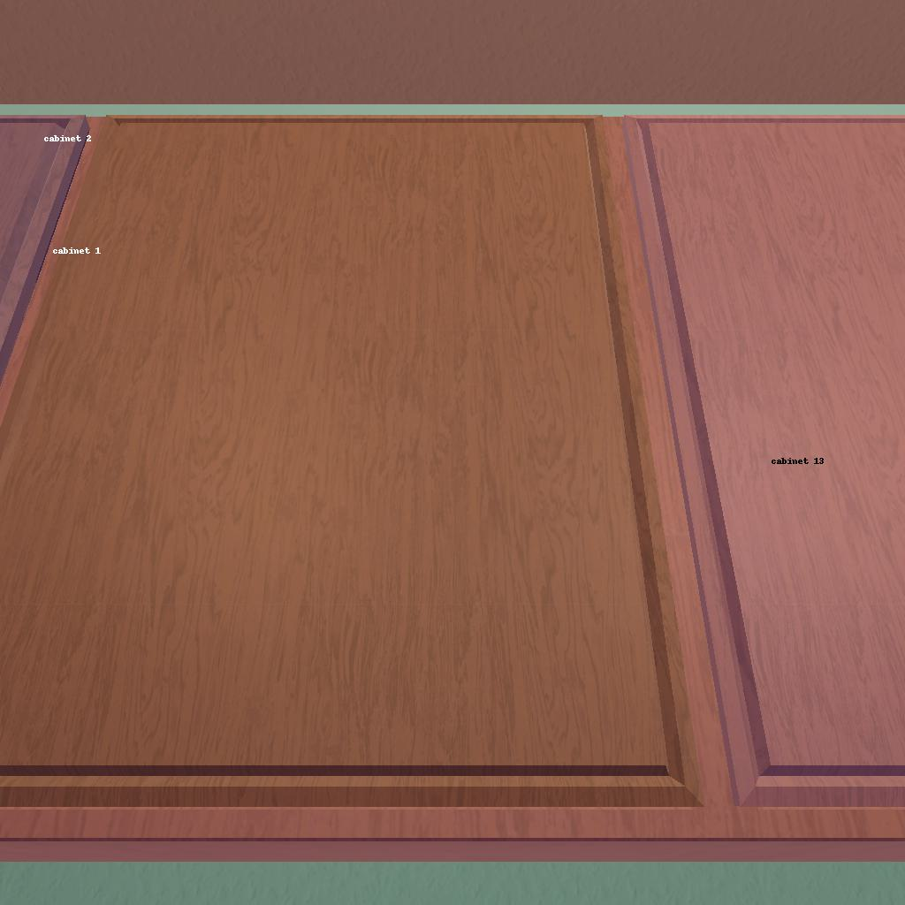

---------------------------------------------------------task: 22---------------------------------------------------------
--------------------------------------------------------------------------------------------------------------------------------------------------------------------
--------------------------------------------------------------------------------------------------------------------------------------------------------------------
Step:--------------------------------------------------------------------------12-------------------------------------------------------------------------------
----------------------------------------
VLM Prompt:
Image1:
Image2:
**Instruction**
1. Analyze the provided image to identify all visible household objects, focusing on those relevant to the task description "put a hot egg in countertop."
2. Use the analysis of the image and the task hint "The agent must find an object of the desired type, pick it up, go to a microwave, heat the object with the microwave, then find the correct location to place it, and put it down there. The agent does not need to use the microwave button or open the microwave to heat the object, and the agent just needs to do action that is "heat the object with the microwave"." to answer the question: what is the most reasonable action in the choices for the task description "put a hot egg in countertop"?
4. Decide and write the answer using the template: The answer is: (i): , where i is the real number. If there is no desired object in the image, search every place based on **Initial Observation** to find the object. And if no one is exactly correct, choose a similar answer.
**Initial Observation**
You are in the middle of a room. Looking quickly around you, you can see cabinet (1-18), countertop (1-4), sink (1), drawer (1-7), sinkbasin (1), coffeemachine (1), microwave (1), garbagecan (1), stoveburner (1-4), toaster (1), fridge (1)
**Answer Choices**
(1): go to countertop 1
(2): go to cabinet 3
(3): go to cabinet 4
(4): go to cabinet 5
(5): go to sink 1
(6): go to cabinet 6
(7): go to drawer 1
(8): go to drawer 2
(9): go to sinkbasin 1
(10): go to cabinet 7
(11): go to cabinet 8
(12): go to coffeemachine 1
(13): go to microwave 1
(14): go to cabinet 9
(15): go to countertop 2
(16): go to cabinet 10
(17): go to drawer 3
(18): go to drawer 4
(19): go to garbagecan 1
(20): go to drawer 5
(21): go to cabinet 11
(22): go to cabinet 12
(23): go to cabinet 13
(24): go to cabinet 14
(25): go to stoveburner 1
(26): go to countertop 3
(27): go to stoveburner 2
(28): go to stoveburner 3
(29): go to stoveburner 4
(30): go to drawer 6
(31): go to cabinet 15
(32): go to cabinet 16
(33): go to cabinet 17
(34): go to cabinet 18
(35): go to toaster 1
(36): go to drawer 7
(37): go to countertop 4
(38): go to fridge 1
(39): open cabinet 2
(40): close cabinet 2
**Answer**
Let's think step by step by following the instructions.
----------------------------------------
----------------------------------------
Original Response:
Firstly, we need to locate an egg, which is not visible in the provided image. Therefore, we need to search for it. Since eggs are typically stored in a fridge or a cabinet, the most reasonable action would be to go to one of these places to find the egg.
Next, according to the task hint, the agent needs to heat the object with the microwave. Since we cannot see the microwave in the image, we must assume it's located elsewhere in the room. However, the image analysis is not helping in this step as the microwave is not visible.
Finally, we need to put the hot egg on a countertop. Countertops are typically used as surfaces for preparing or placing food, so this would be a logical location to complete the task.
Based on the **Initial Observation** and the task steps, the most reasonable action to start with would be to find the egg, which is likely in the fridge or a cabinet. Therefore, the answer is:
The answer is: (38): go to fridge 1
----------------------------------------
----------------------------------------
>>> Refine Original VLM Response and Get Pure Action: go to fridge 1
----------------------------------------
-----------------------------------------------------------------
Running time: 13.056551694869995 seconds
Total Money: 10.936860000000003
-----------------------------------------------------------------
-----------------------------------------------------------------
Text Observation:You arrive at loc 39. The fridge 1 is open. On the fridge 1, you see a bread 1, a lettuce 1, a bowl 1, a potato 1, a potato 2, and a apple 1.
-----------------------------------------------------------------
UNSUCCEED